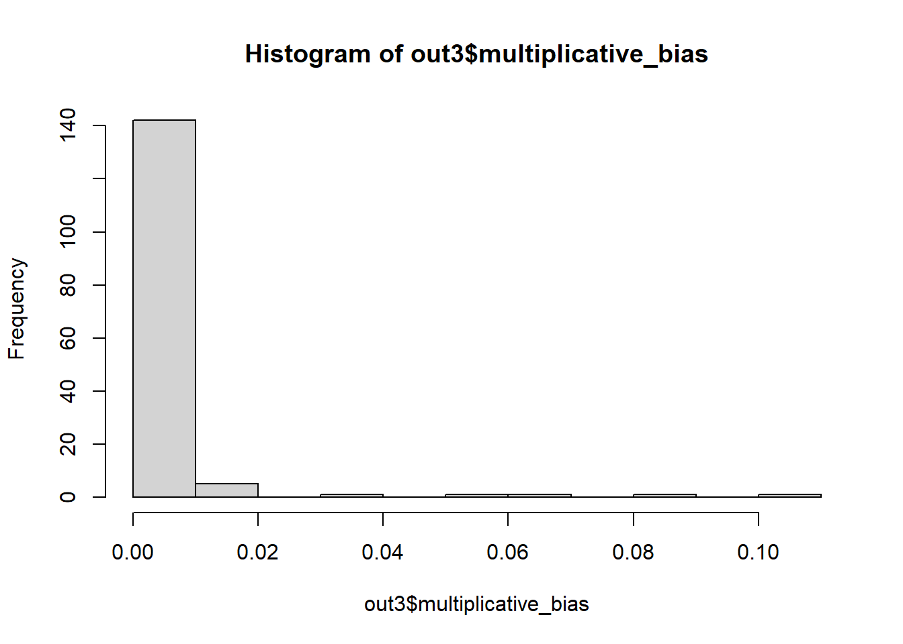

load(file = "data/analytic3cycles.RData")
ls()
#> [1] "dat.mortality" "dat.proxy.long" "data.complete" "data.imputed"
#> [5] "data.merged" "data.merged.xy"Appendix H — Creating hdPS variables from NHANES
H.1 Determine data sources
H.1.1 Analytic data
Even though the original algorithm was proposed for health care utilization or claims databases, in the current example, we will be relying on openly available NHANES data.
H.1.2 Proxy data
The Prescription Medications component of NHANES provides personal interview data on use of prescription medications during a one-month period prior (past 30 days) to the participant’s interview date.
analytic <- data.imputed
rm(data.complete, data.imputed, data.merged, data.merged.xy)
proxy.var.long <- dat.proxy.long
rm(dat.proxy.long)H.1.3 Merge analytic data and proxies
- Prepare the minimal analytic data only with the following 4 information:
- identifying information (
idx) - exposure (
obese) - outcome (
diabetes) - domain of the codes (
dx)
In this example we only have prescription domain (1 domain dx)
idx <- analytic$id
outcome <- as.numeric(analytic$diabetes == "Yes")
exposure <- as.numeric(analytic$obese == "Yes")
domain <- "dx"
analytic.dfx <- as.data.frame(cbind(idx, exposure, outcome, domain))
head(analytic.dfx)dim(analytic.dfx)
#> [1] 16091 4- In the proxy data (from prescription domain), make sure the IDs have same name (
idx) as the minimal analytic data:
proxy.var.long$idx <- proxy.var.long$id
sort(table(proxy.var.long$icd10), decreasing = TRUE)[1:10]
#>
#> I10 E78 J45 F32 F41 K21 M79 M54 E03 G47
#> 7302 3674 1495 1483 1439 1233 1156 1050 1017 964
head(proxy.var.long)proxy.var.long$id <- NULL- Merge both datasets
dfx <- merge(analytic.dfx, proxy.var.long, by = "idx")
head(dfx)tail(dfx)dim(dfx)
#> [1] 33885 5H.2 Identifying candidate empirical covariates
- Now, based on the merged dataset, we want to identify which patients were linked in both databases
#select distinct elements that are unique for each patient - treatment and outcome
basetable <- dfx %>% select(idx, exposure, outcome) %>% distinct()
head(basetable)dim(basetable)
#> [1] 8944 3
patientIds <- basetable$idx- Using the above IDs, we want to identify the list of candidate empirical covariates. This list is constrained by
- their prevalence (only top
ncovariates with highest prevalence would be chosen). We choosen = 200as it was proposed in the original algorithm. In reality, this is not necessary to be so restrictive. - More importantly, analysts absolutely need to get rid of the codes that have zero variance (e.g., everyone has the code, or nobody has it). This second part of the problem is more likely and addressed by the following restriction: At least
min_num_patientsnumber of patients need to have that code to be selected in the list.
If there were more dimensions, separate list of candidate empirical covariates would be identified.
One important point here is that we have chosen granularity to be 3 digits in the ICD-10 code (we have already truncated the codes at 3 digit level while preparing the data).
step1 <- get_candidate_covariates(df = dfx,
domainVarname = "domain",
eventCodeVarname = "icd10",
patientIdVarname = "idx",
patientIdVector = patientIds,
n = 200,
min_num_patients = 20)
#> Joining with `by = join_by(eventCodeVarname, domainVarname)`
out1 <- step1$covars_data
head(out1)tail(out1)all.equal(patientIds, step1$patientIds) #should return TRUE
#> [1] TRUEH.3 Assessing recurrence via 3 binary variables
In this step, we generate 3 binary recurrence covariates for each of the candidate empirical covariates identified in the previous step:
- occurred at least once
- occurred sporadically (at least more than the median)
- occurred frequently (at least more than the 75th percentile)
step2 <- get_recurrence_covariates(df = out1,
patientIdVarname = "idx",
eventCodeVarname = "icd10",
patientIdVector = patientIds)
out2 <- step2$recurrence_data
head(out2[,1:3])names(step2$recurrence_data)[-1]
#> [1] "rec_dx_A49_once" "rec_dx_A60_once" "rec_dx_B00_once"
#> [4] "rec_dx_B02_once" "rec_dx_B20_once" "rec_dx_B20_frequent"
#> [7] "rec_dx_B35_once" "rec_dx_B37_once" "rec_dx_B96_once"
#> [10] "rec_dx_C50_once" "rec_dx_C80_once" "rec_dx_D75_once"
#> [13] "rec_dx_E03_once" "rec_dx_E04_once" "rec_dx_E05_once"
#> [16] "rec_dx_E07_once" "rec_dx_E28_once" "rec_dx_E29_once"
#> [19] "rec_dx_E78_once" "rec_dx_E79_once" "rec_dx_E87_once"
#> [22] "rec_dx_F17_once" "rec_dx_F20_once" "rec_dx_F20_frequent"
#> [25] "rec_dx_F29_once" "rec_dx_F31_once" "rec_dx_F31_frequent"
#> [28] "rec_dx_F32_once" "rec_dx_F39_once" "rec_dx_F41_once"
#> [31] "rec_dx_F43_once" "rec_dx_F90_once" "rec_dx_G20_once"
#> [34] "rec_dx_G20_frequent" "rec_dx_G25_once" "rec_dx_G30_once"
#> [37] "rec_dx_G30_frequent" "rec_dx_G31_once" "rec_dx_G40_once"
#> [40] "rec_dx_G43_once" "rec_dx_G47_once" "rec_dx_G89_once"
#> [43] "rec_dx_H04_once" "rec_dx_H10_once" "rec_dx_H40_once"
#> [46] "rec_dx_H40_frequent" "rec_dx_H57_once" "rec_dx_H57_frequent"
#> [49] "rec_dx_H66_once" "rec_dx_I10_once" "rec_dx_I10_frequent"
#> [52] "rec_dx_I20_once" "rec_dx_I21_once" "rec_dx_I48_once"
#> [55] "rec_dx_I48_frequent" "rec_dx_I49_once" "rec_dx_I50_once"
#> [58] "rec_dx_I50_frequent" "rec_dx_I51_once" "rec_dx_I63_once"
#> [61] "rec_dx_I70_once" "rec_dx_I80_once" "rec_dx_I99_once"
#> [64] "rec_dx_J01_once" "rec_dx_J02_once" "rec_dx_J18_once"
#> [67] "rec_dx_J20_once" "rec_dx_J30_once" "rec_dx_J40_once"
#> [70] "rec_dx_J42_once" "rec_dx_J43_once" "rec_dx_J43_frequent"
#> [73] "rec_dx_J44_once" "rec_dx_J44_sporadic" "rec_dx_J45_once"
#> [76] "rec_dx_J45_frequent" "rec_dx_J98_once" "rec_dx_K04_once"
#> [79] "rec_dx_K08_once" "rec_dx_K21_once" "rec_dx_K25_once"
#> [82] "rec_dx_K27_once" "rec_dx_K30_once" "rec_dx_K31_once"
#> [85] "rec_dx_K51_once" "rec_dx_K51_frequent" "rec_dx_K58_once"
#> [88] "rec_dx_K59_once" "rec_dx_K76_once" "rec_dx_K92_once"
#> [91] "rec_dx_L08_once" "rec_dx_L20_once" "rec_dx_L23_once"
#> [94] "rec_dx_L29_once" "rec_dx_L40_once" "rec_dx_L70_once"
#> [97] "rec_dx_L71_once" "rec_dx_L93_once" "rec_dx_L93_frequent"
#> [100] "rec_dx_M06_once" "rec_dx_M10_once" "rec_dx_M13_once"
#> [103] "rec_dx_M19_once" "rec_dx_M1A_once" "rec_dx_M25_once"
#> [106] "rec_dx_M54_once" "rec_dx_M54_frequent" "rec_dx_M62_once"
#> [109] "rec_dx_M79_once" "rec_dx_M81_once" "rec_dx_M85_once"
#> [112] "rec_dx_N19_once" "rec_dx_N20_once" "rec_dx_N28_once"
#> [115] "rec_dx_N30_once" "rec_dx_N32_once" "rec_dx_N39_once"
#> [118] "rec_dx_N40_once" "rec_dx_N42_once" "rec_dx_N52_once"
#> [121] "rec_dx_N92_once" "rec_dx_N94_once" "rec_dx_N95_once"
#> [124] "rec_dx_R00_once" "rec_dx_R05_once" "rec_dx_R06_once"
#> [127] "rec_dx_R07_once" "rec_dx_R09_once" "rec_dx_R10_once"
#> [130] "rec_dx_R11_once" "rec_dx_R12_once" "rec_dx_R19_once"
#> [133] "rec_dx_R21_once" "rec_dx_R25_once" "rec_dx_R32_once"
#> [136] "rec_dx_R35_once" "rec_dx_R39_once" "rec_dx_R41_once"
#> [139] "rec_dx_R42_once" "rec_dx_R45_once" "rec_dx_R51_once"
#> [142] "rec_dx_R52_once" "rec_dx_R60_once" "rec_dx_R73_once"
#> [145] "rec_dx_T14_once" "rec_dx_T78_once" "rec_dx_T86_once"
#> [148] "rec_dx_T86_sporadic" "rec_dx_T86_frequent" "rec_dx_T88_once"
#> [151] "rec_dx_Z79_once" "rec_dx_Z95_once"
length(step2$recurrence_data)
#> [1] 153
dim(out2)
#> [1] 8944 153H.4 Prioritising covariates
H.4.1 Bross formula
- Three components are used in the calculation of bias contributed by not adjusting for a covariate:
- prevalence of a binary recurrence variable among exposed (\(P_{RE}\))
- prevalence of that binary recurrence variable among unexposed (\(P_{RU}\))
- association between that binary recurrence variable and the outcome (\(RR_{RO}\))
These are the ingredients of the Bross formula. This formula is helpful for understanding the impact of unmeasured confounding of a binary variable. We have to put assumed prevalence and risk ratio associated with an unmeasured confounder.
- These components help us calculate \(log-absolute-bias\) amount:
\(Bias = \frac{P_{RE} (RR_{RO} - 1) + 1}{P_{RU} (RR_{RO} - 1) + 1}\)
For empirical covariates, we do not need to assume, we can basically calculate these numbers (\(log-absolute-bias\)) for all of the empirical covariates. For each data dimension, we rank each of the empirical covariates based on the amount of bias (confounding or imbalance) it could likely adjust.
- Based on this \(log-absolute-bias\), we select top
kempirical covariates to be used in the hdPS analyses later.
out3 <- get_prioritised_covariates(df = out2,
patientIdVarname = "idx",
exposureVector = basetable$exposure,
outcomeVector = basetable$outcome,
patientIdVector = patientIds,
k = 100)
names(out3)
#> [1] "autoselected_covariate_df" "multiplicative_bias"
names(out3$autoselected_covariate_df)[-1]
#> [1] "rec_dx_I10_once" "rec_dx_R73_once" "rec_dx_I10_frequent"
#> [4] "rec_dx_R60_once" "rec_dx_E78_once" "rec_dx_M79_once"
#> [7] "rec_dx_I51_once" "rec_dx_I50_once" "rec_dx_E87_once"
#> [10] "rec_dx_K21_once" "rec_dx_D75_once" "rec_dx_Z79_once"
#> [13] "rec_dx_F41_once" "rec_dx_N28_once" "rec_dx_M1A_once"
#> [16] "rec_dx_M10_once" "rec_dx_F90_once" "rec_dx_L70_once"
#> [19] "rec_dx_F43_once" "rec_dx_M19_once" "rec_dx_E79_once"
#> [22] "rec_dx_I50_frequent" "rec_dx_B20_once" "rec_dx_R32_once"
#> [25] "rec_dx_F32_once" "rec_dx_R12_once" "rec_dx_N19_once"
#> [28] "rec_dx_R51_once" "rec_dx_M54_once" "rec_dx_I80_once"
#> [31] "rec_dx_N30_once" "rec_dx_J45_once" "rec_dx_B00_once"
#> [34] "rec_dx_R07_once" "rec_dx_I70_once" "rec_dx_H10_once"
#> [37] "rec_dx_T14_once" "rec_dx_I63_once" "rec_dx_N40_once"
#> [40] "rec_dx_M06_once" "rec_dx_A60_once" "rec_dx_G89_once"
#> [43] "rec_dx_G43_once" "rec_dx_E28_once" "rec_dx_F31_once"
#> [46] "rec_dx_K31_once" "rec_dx_H40_frequent" "rec_dx_I21_once"
#> [49] "rec_dx_I48_once" "rec_dx_N92_once" "rec_dx_M13_once"
#> [52] "rec_dx_J98_once" "rec_dx_M81_once" "rec_dx_R21_once"
#> [55] "rec_dx_G47_once" "rec_dx_R35_once" "rec_dx_H40_once"
#> [58] "rec_dx_T78_once" "rec_dx_M85_once" "rec_dx_L29_once"
#> [61] "rec_dx_G31_once" "rec_dx_B02_once" "rec_dx_T86_once"
#> [64] "rec_dx_R52_once" "rec_dx_G25_once" "rec_dx_J20_once"
#> [67] "rec_dx_M54_frequent" "rec_dx_R42_once" "rec_dx_T86_sporadic"
#> [70] "rec_dx_I49_once" "rec_dx_I20_once" "rec_dx_E07_once"
#> [73] "rec_dx_J30_once" "rec_dx_K92_once" "rec_dx_E03_once"
#> [76] "rec_dx_K08_once" "rec_dx_J02_once" "rec_dx_K51_frequent"
#> [79] "rec_dx_H57_frequent" "rec_dx_G30_frequent" "rec_dx_J40_once"
#> [82] "rec_dx_J42_once" "rec_dx_C80_once" "rec_dx_B96_once"
#> [85] "rec_dx_G20_frequent" "rec_dx_I99_once" "rec_dx_Z95_once"
#> [88] "rec_dx_T88_once" "rec_dx_H66_once" "rec_dx_K58_once"
#> [91] "rec_dx_F17_once" "rec_dx_N95_once" "rec_dx_R39_once"
#> [94] "rec_dx_R25_once" "rec_dx_K30_once" "rec_dx_R05_once"
#> [97] "rec_dx_L08_once" "rec_dx_F39_once" "rec_dx_B37_once"
#> [100] "rec_dx_N94_once"
out3$autoselected_covariate_df$rec_dx_NA_once <- NULL
out3$autoselected_covariate_df$rec_dx_NA_sporadic <- NULL
out3$autoselected_covariate_df$rec_dx_NA_frequent <- NULL
dim(out3$autoselected_covariate_df)
#> [1] 8944 101
head(out3$autoselected_covariate_df[,1:3])H.4.2 Investigate log-absolute-bias
length(out3$multiplicative_bias)
#> [1] 152
summary(out3$multiplicative_bias)*100
#> Min. 1st Qu. Median Mean 3rd Qu. Max.
#> 0.000325 0.018752 0.053685 0.346664 0.125403 10.695535
length(out3$multiplicative_bias[out3$multiplicative_bias > 0.0001])
#> [1] 128
length(out3$multiplicative_bias[out3$multiplicative_bias > 0.001])
#> [1] 50
length(out3$multiplicative_bias[out3$multiplicative_bias > 0.01])
#> [1] 10
length(out3$multiplicative_bias[out3$multiplicative_bias > 0.1])
#> [1] 1
hist(out3$multiplicative_bias)
H.5 Save all data
H.5.1 Analytic data
analytic$idx <- analytic$id
analytic$id <- NULL
dim(analytic)
#> [1] 16091 34
# profile_missing(analytic)
analyticvar.names0 <- names(analytic)
analyticvar.names <- setdiff(analyticvar.names0, c("age",
"diabetes",
"pregnancy",
"obese",
"survey.weight",
"survey.weight.mec",
"psu",
"strata",
"year",
"idx"))save(analytic, analyticvar.names, file = "data/analyticData.RData") H.5.2 Data with empirical covariates
emp.cov.dim <- step2$recurrence_data
emp.codes <- names(step2$recurrence_data)[-1]
emp.cov.data <- merge(analytic, emp.cov.dim, by = "idx", all.x = TRUE)
# profile_missing(emp.cov.data)
emp.cov.data[is.na(emp.cov.data)] <- 0
# profile_missing(emp.cov.data)
dim(emp.cov.data)
#> [1] 16091 186
emp.cov.names <- names(step2$recurrence_data)[-1]
sort(apply(emp.cov.data[,emp.cov.names], 2, sum))[1:10]
#> rec_dx_K51_frequent rec_dx_B20_frequent rec_dx_G30_frequent rec_dx_L93_frequent
#> 7 9 9 10
#> rec_dx_F20_frequent rec_dx_G20_frequent rec_dx_T86_frequent rec_dx_H57_frequent
#> 11 11 12 15
#> rec_dx_J43_frequent rec_dx_A60_once
#> 15 21save(emp.cov.names, emp.cov.data, file = "data/EmpCovData.RData") H.5.3 Data with hdPS covariates
hdps.dim <- out3$autoselected_covariate_df
hdps.data <- merge(analytic, hdps.dim, by = "idx", all.x = TRUE)
# profile_missing(hdps.data)
hdps.data[is.na(hdps.data)] <- 0
# profile_missing(hdps.data)
dim(hdps.data)
#> [1] 16091 134
hdps.names <- names(out3$autoselected_covariate_df)[-1]
sort(apply(hdps.data[,hdps.names], 2, sum))[1:10]
#> rec_dx_K51_frequent rec_dx_G30_frequent rec_dx_G20_frequent rec_dx_H57_frequent
#> 7 9 11 15
#> rec_dx_A60_once rec_dx_T86_sporadic rec_dx_J02_once rec_dx_H66_once
#> 21 23 24 24
#> rec_dx_M85_once rec_dx_B02_once
#> 25 25save(hdps.names, hdps.data, file = "data/hdPSData.RData")